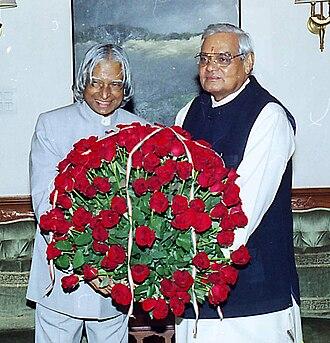

Presidency
On 10 June 2002, the National Democratic Alliance which was in power at the time, expressed its intention to nominate Kalam for the post of the President of India.His candidature was backed by the opposition parties including the Samajwadi Party and the Nationalist Congress Party After the support for Kalam, incumbent president K. R. Narayanan chose not to seek a re-election.
On 18 June, Kalam filed his nomination papers in the Indian Parliament, accompanied by then prime minister Atal Bihari Vajpayee and senior cabinet members. He faced off against Lakshmi Sahgal, and the polling for the presidential election was held on 15 July 2002, in the Indian parliament and the state assemblies, with the media predicting a win for Kalam.The counting was held on 18 July, and Kalam won the elections after securing 922,884 electoral votes as against the 107,366 votes won by Sahgal.